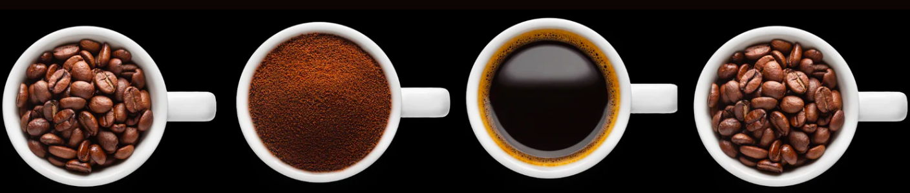

OUR STORY
My story begins in Tokyo, Japan. Being raised by parents who were enthusiasts of a universal language called ‘’Esperanto”, we would travel abroad every summer to attend a “World Esperanto Congress” held in different countries. My father was the owner of a manufacturing and trading company, and together with his frequent business trips, they would take me overseas whenever possible – ultimately helping to inspire my love of multiculturalism, design, and architecture. Through experiencing different cultures, seeing rich and poor people, happy and unhappy people, I started to wonder who I was, and asked myself what kind of life I wanted to live? After my high school graduation, I moved to California for college. I settled into a snug apartment in Venice Beach and indulged myself in the unique fusion of beach hippie culture. It was during my college years that my love for coffee started. In the 1990s, Starbucks began to expand throughout the country, capturing me with their new coffee culture and serene atmosphere. I spent lots of my days at the Starbucks in Venice Beach, either talking with friends or studying. Upon graduating from college, I started work for a trading company, which allowed me to travel overseas for business. A lot was learned from working closely with business owners around the world; I gained valuable insights as per their mindset towards work and life. And although most of them were very wealthy, I found that some were happy and others were not. This caused me to keep asking the same two questions: Who am I? What kind of life do I want to live? I reflected on them over and over. Eventually, I found my answers. ・I want to live a simple and down-to-earth life. ・I only need the basics to be satisfied: food, clothing and a house. ・As my parents did for me, I also want to travel with my children and provide a higher standard of life for them. And my last answer was coffee. I truly need an amazing cup of coffee every day. This is why I founded % Shaghaf. So to create the best coffee possible, I borrowed money and bought a coffee farm in Hawaii. I also started trading green beans from around the world and became the sole-exporter of a Japanese roasting machine along with the distributor of one of the best espresso machines in the world. Then in September 2014, I opened the flagship store in the beautiful historic city of Kyoto, Japan.